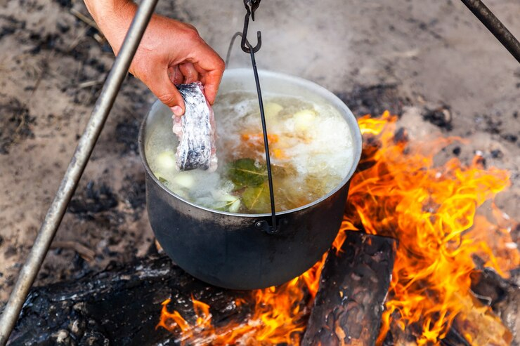

Easy Nordic recipes!

Fish in cooking pit
Ingredients:
For this recipe, we are going to need:
- Fish;
- Stones;
- Twigs or large leaves;
- Blades of grass or birch roots;
- Turfgrass.
Directions
-
Dig a pit approximately 50 x 50 cm. The depth should be 30-40 cm. Be careful of the turf, they should be used as a lid.
-
Heat stones in a fireplace next to the pit. Use stones that are about 15 cm in diameter. Never use flint stones that can be blasted by the heat. While the stones are heating up, the food is prepared.
Cooking
- Wrap the fish in a large piece of birch or large leaves of some kind. Tie the package together with blades of grass or birch roots. Also put grass in the ends of the package so that no soil can enter.
- Place a layer of hot stones in the bottom of the pit. Use wooden sticks to roll over the stones.
- Stop the fish and place several hot stones around the package. When the pit is filled with stones, the turf is laid on or soil is shoveled over, so that the heat does not disappear from the pit.
- After about 45 minutes, the fish is done. Keep in mind that the stones can still be hot when picked up.
Advice: Meat can also be fried in this way. 1 kg of meat takes about 1 1/2 hours.
Back to home